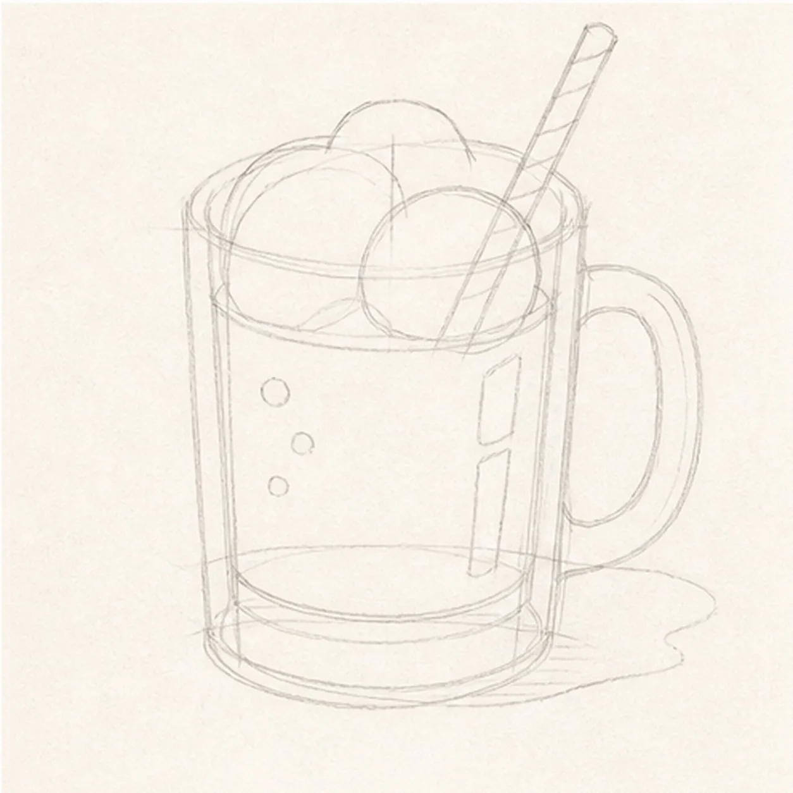
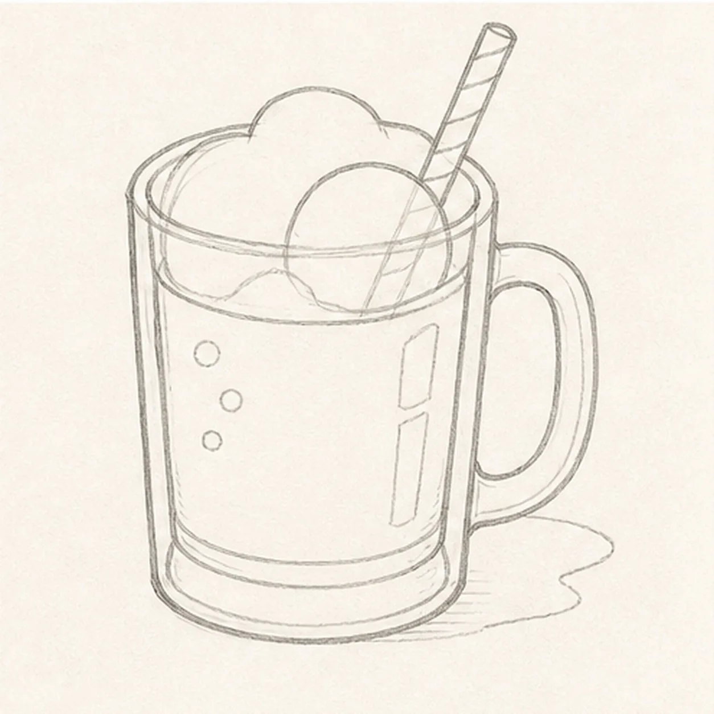
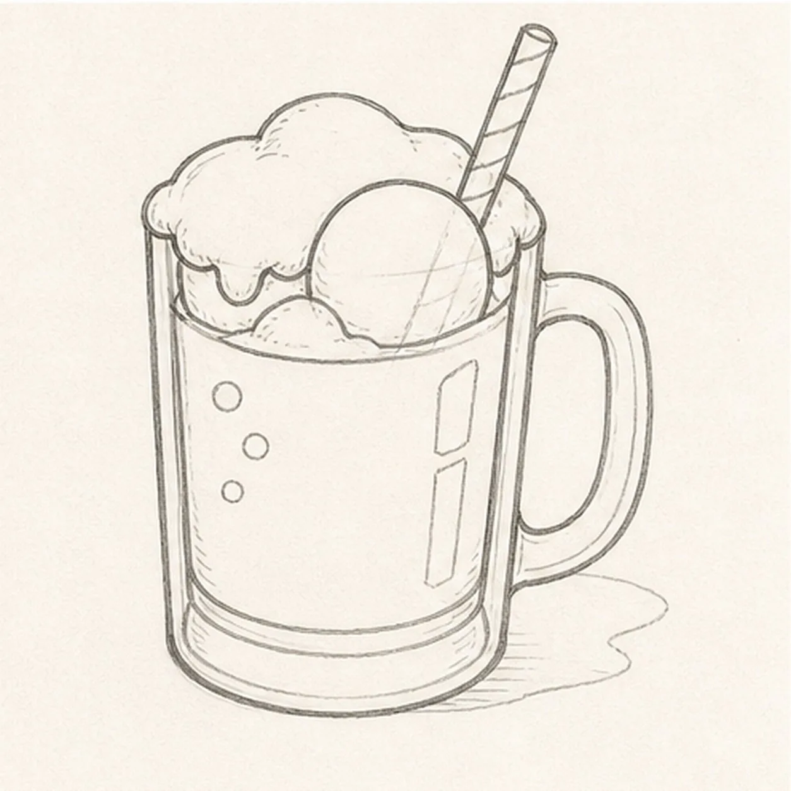
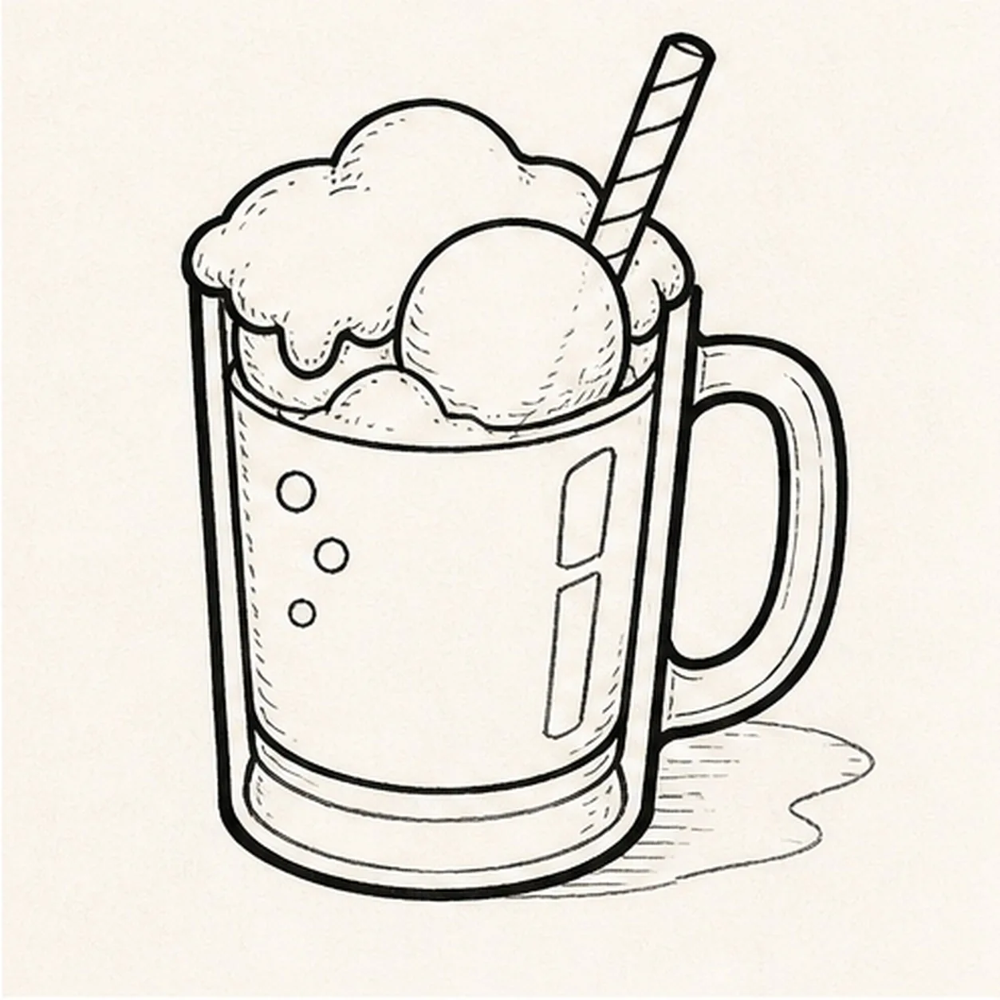
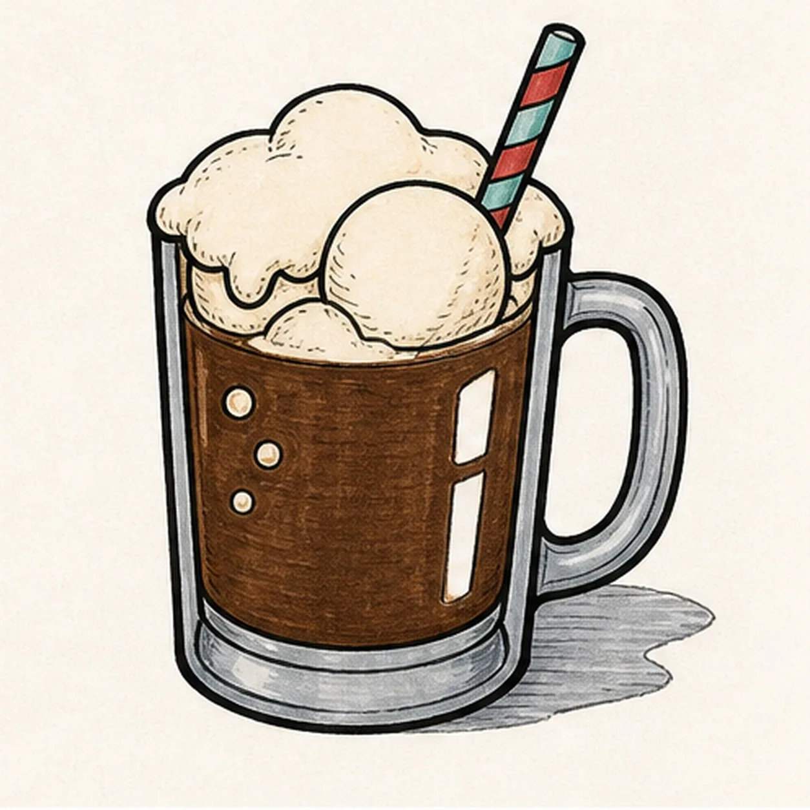

Felt-tip marker mode
Let's draw a root beer float with a striped straw
Treat this as one playful practice round: sketch the idea loosely, simplify the shapes, then commit with confident marker outlines and bright fills.
-
01

Map the float in the mug
Use pale construction to place one thick glass mug, its side handle, root-beer level, one large scoop circle, irregular foam cap, one diagonal straw route, exactly three bubbles, two glass highlights, and one broken shadow footprint.
Marker tip: Ghost the mug envelope and scoop before touching down, then compare their widths. Reserve the scoop and handle now so the drink, foam, and far mug wall stop cleanly instead of becoming lines you must erase later.
-
02

Shape the frosty mug
Wrap the guides with one sturdy three-quarter mug, thick inner rim, tapered sides, heavy base, one clear handle, and the root-beer plane while preserving every scoop, foam, straw, bubble, highlight, and shadow route.
Marker tip: Draw the near mug wall first, then use its slope to aim the far wall. Keep the inner and outer handle curves parallel, and trace the root-beer level with your finger so it stops around the reserved scoop and glass edges.
-
03

Float the scoop and fizz
Clarify exactly one large vanilla scoop, one irregular foam cap, one striped straw, exactly three bubbles inside the drink, two open-paper glass highlights, and the established broken shadow.
Marker tip: Vary the foam lobes around the scoop instead of making a perfect cloud. Keep all three bubbles inside the dark drink, and let the straw disappear only behind the scoop edge you reserved in the first panel.
-
04

Ink the soda-fountain lines
Trace only the established mug, handle, drink, scoop, foam, straw, three bubbles, two highlights, and shadow with thick, slightly wobbly black felt-tip, then add sparse foam and glass hatching.
Marker tip: Ink the bubbles and straw stripes first, let them dry, then rotate the page for the large mug curves. Give the outside silhouette the heaviest line and keep the glass and foam hatching lighter.
-
05

Pour in the retro color
Fill the established drink root-beer brown, scoop and foam cream, straw muted aqua and red, and glass edges plus shadow cool gray while preserving visible marker streaks and both paper highlights.
Marker tip: Pull the brown strokes vertically through the mug and work around every bubble and highlight. Let adjoining fills dry before they touch, and use one extra cream pass only where the scoop turns away from the light.
-
06

Frost the float finish
Thicken selected established black edges, even the existing fills, deepen the same foam hatching and shadow, sharpen both highlight gaps, and remove only pale guides that distract.
Marker tip: Count one mug, one handle, one scoop, one foam cap, one straw, three bubbles, two highlights, and one shadow before stopping. Change the soda-fountain colors if you like, but keep the same overlaps and handmade marker grain.
![Handmade felt-tip marker drawing of one seated warm-brown cartoon capybara with one long blunt muzzle, exactly two tiny high-set rounded ears, one wide oval left eye, one half-lidded right eye under one raised brow, one blunt dark nose, one crooked closed smile, exactly six whisker dots, exactly two short forelegs and two paws holding opposite upper sides of one bright-orange fruit, exactly two visible hind feet, one teal leaf, exactly three fur-tuft groups at the head cheek and rump, one open-paper body highlight, one open-paper fruit highlight, exactly four orange dimples, coral cheek and inner-ear accents, thick imperfect black outlines, visible directional marker texture, and one broken deep-navy ground shadow](../assets/cartoon-capybara-holding-an-orange-finished-v1.webp)
![Handmade felt-tip marker drawing of one face-free upright cartoon hourglass with exactly two rounded teal caps, exactly two attached coral side pillars, one pale-aqua pinched glass vessel, one curved upper golden-yellow sand bed, one centered falling sand stream, one rounded lower sand pile, exactly two open-paper glass highlights, exactly three yellow four-point sparkles, exactly four deep-navy cap notches, thick imperfect black outlines, visible directional marker texture, and one broken deep-navy ground shadow](../assets/cartoon-hourglass-with-flowing-sand-finished-v1.webp)
![Handmade felt-tip marker drawing of one face-free upright teal cartoon walkie-talkie leaning slightly right with one top-left antenna, exactly two coral top knobs, one attached coral push-to-talk button on the upper-left side, one blank pale-aqua rounded screen with a dark bezel, exactly five horizontal deep-navy speaker slots, exactly two yellow radio-wave arcs above the antenna, exactly two open-paper case highlights, exactly four lower grip ribs arranged two per side, thick imperfect black outlines, visible directional marker texture, and one broken deep-navy ground shadow](../assets/cartoon-walkie-talkie-finished-v1.webp)